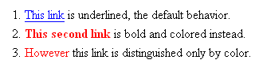
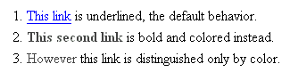

Day 12: Using color safely
This tip is a general rule that applies to many areas of web design, but I will focus on a specific example that is common among weblogs: link text.
There are two potential problems related to color. First, your link text may not contrast sufficiently with your background color. Any very light color on a white background is trouble; the link text may simply disappear into the background. Similarly, a dark color on a black background is trouble. This actually applies to all text, not just links, but it's fairly common on weblogs for text to be readable and links to be made unintentionally unreadable, which is why I mention links in particular.
The second potential problem is the link decoration. If your CSS redefines a rule to make your links a different color, you need to make sure that the links are also distinguishable in some other way, like bold, italic, or underline. Otherwise, the link text might be perfectly readable, but colorblind people won't be able to tell that it's a link. This is illustrated below.
Who benefits?
Michael benefits. Here is a sample screenshot of three different decoration schemes for links.

As shown, the link in the first sentence uses the default scheme, and displays blue/purple and underlined in visual browsers. The second link has two forms of text decoration applied, and displays bold and red (but not underlined). The third link has only one form of text decoration applied, and displays only as red.
Now here are the same three links, as Michael sees them.

As shown, the first link is still visible; Michael's colorblindness is not affected by the color blue. In the second sentence, the redness of the link fades, almost to black, but the link still appears bold, so Michael can still distinguish it. The problem occurs in the third link, which was previously only distinguished by its redness; now that the redness has faded to black, it is virtually impossible to tell which word is a link and which words are normal text.
How to do it
To check for "sufficient contrast" between your text color and background color, use VisCheck to simulate what your web page looks like to a colorblind reader.
To check for link decoration problems, look at your CSS rules for "a" tags. For example, if you have a rule like this in your CSS, then your links are only distinguished by their redness, which is no good:
a { text-decoration: none; color: red; }
You can keep your links red, but you need to make sure that the links are also bold, or underlined, or italicized. To make them bold as well as red, add one line:
a { text-decoration: none; color: red; font-weight: bold; /* add this line */ }
Further reading
- VisCheck simulates colorblindness and allows you to see what colorblind people see. You can check a single image or an entire web page.
- Cal Henderson: Color Vision. Shows the color spectrum as seen by people with various types of colorblindness.
- Ishihara Test for Color Blindness contains a series of images that people with red-green colorblindness see differently, or don't see at all.